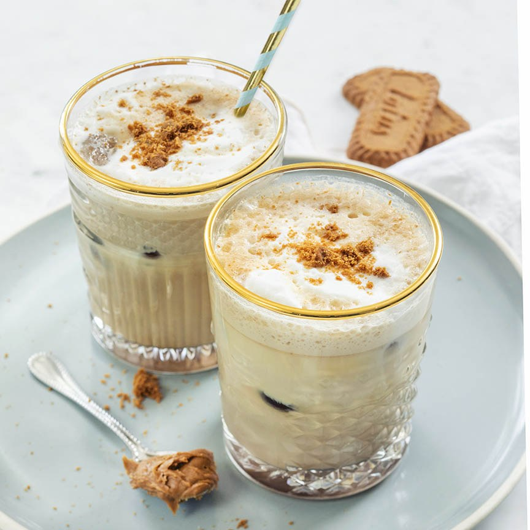

Ijs koffie met speculoos
Dit heerlijke nagerecht is een perfecte afsluiting van een goed dinee.
Ingrediënten
- 2 kleine kopjes koffie.
- 200 ml melk + opgeschuimd koud.
- Ijsblokjes.
- 2 eetlepels speculoos pasta.
- Snuf kaneel.
- Melkopschuimer.
Bereidingswijze
- Zet de koffie en roer daarna de Speculoos, kaneel en eventueel een beetje extra suiker erdoor.
- Laat het grotendeels afkoelen.
- Klop de melk koud op.
- Vul 2 glazen voor de helf met ijsblokjes.
- Giet de opgeschuimde melk er over.
- Roer de koffie nog eens goed door en schenk bij het ijs en de melk.
- Roer het nog even kort door elkaar en ganeer eventueel met wat kruimels van Speculoos koekjes of kaneel.

Wil je ook nog andere recpeten proberen?
Gehaktbrood
Voorgerecht